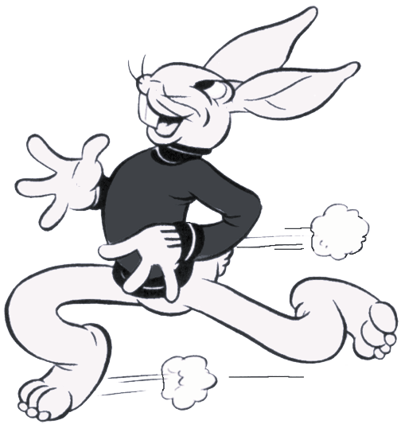

Origem
As fábulas têm uma origem muito antiga e estão presentes em diversas culturas ao redor do mundo. Inicialmente, elas surgiram na tradição oral, sendo contadas de geração em geração como uma forma de transmitir lições de vida e ensinamentos morais de maneira simples e memorável. Antes de serem escritas, essas histórias eram usadas principalmente para educar crianças e para oferecer conselhos práticos à sociedade. Os primeiros registros escritos de fábulas aparecem na Grécia Antiga, com Esopo, um contador de histórias que viveu no século VI a.C. Suas narrativas curtas, frequentemente protagonizadas por animais com características humanas, buscavam ensinar valores éticos e reflexões sobre o comportamento humano. Apesar de suas origens em diferentes partes do mundo, elas compartilham o objetivo comum de ensinar lições valiosas de forma acessível e envolvente.
Sobre Mim
Quando eu era bem novinha, eu perdi uma pessoa muito importante para mim, foi a primeira vez que eu experienciei a perda de uma pessoa tão próxima, e como aconteceu em uma idade prematura, isso acabou criando uma impressão muito forte em mim. Mas durante a minha vida, eu aprendi a me agarrar aos momentos bons, e é aí que entram a importância das fábulas na minha vida. Assim como às histórias que nós crescemos ouvindo, e que criam impressões muito fortes em nossas vidas, nós também temos pessoas que nos ensinam lições e vivem em nossa mente e em nossos corações. E minha avó é uma dessas pessoas, uma das melhores lembranças que eu tenho, é quando eu ia dormir na casa dela, e ela lia para mim, 3 contos que marcaram a minha vida: A Tartaruga e a Lebre, a Formiga e a Cigarra, e por último e também a minha favorita: A Chapéuzinho Vermelho. Essas histórias marcaram a minha infância, e sempre que às ouço, me lembram a sorte que eu tive de ter tido uma pessoa tão especial na minha vida.
Fábulas
Fábulas e Seus Personagens:
As fábulas são muito mais do que histórias divertidas; elas carregam ensinamentos que atravessam gerações. Através de personagens cativantes como a esperta Chapeuzinho Vermelho, o astuto Lobo, a trabalhadora Formiga e a perseverante Tartaruga, aprendemos lições valiosas que nos acompanham por toda a vida. Cada personagem reflete uma faceta da nossa humanidade: coragem, prudência, determinação, ou até mesmo os perigos da impulsividade. Essas histórias simples nos mostram que, com paciência, esforço e atenção aos detalhes, podemos superar desafios e nos tornar melhores. Aqui, você pode explorar mais sobre esses personagens inesquecíveis e descobrir o que cada um tem a nos ensinar.
Chapéuzinho Vermelho
Chapeuzinho Vermelho simboliza a ingenuidade e a coragem em aprender com os erros. A história ensina que ouvir os conselhos de pessoas mais experientes pode evitar problemas. Ela também é uma das fábulas mais adaptadas no mundo.
Lição de moral: "Cuidado com os estranhos; nem tudo é o que parece."
Curiosidade: O capuz vermelho usado por Chapeuzinho é interpretado por alguns estudiosos como um símbolo de alerta ou transição para a maturidade. 👧👵🌹
Lobo Mau
O Lobo representa os perigos que enfrentamos quando ignoramos conselhos ou sinais de alerta.
Ele é um arquétipo clássico de perigo mascarado, um personagem presente em várias culturas e fábulas, sempre desafiando a inteligência dos heróis.
Lição de moral: "Quem vive de enganar os outros acaba caindo na própria armadilha."
Curiosidade: Na psicologia, o Lobo muitas vezes representa nossos medos internos, que devemos enfrentar para crescer. 🐺👀
Tartaruga
A tartaruga é um símbolo de paciência e resiliência em várias mitologias, e seu papel nesta fábula reforça essa imagem. Representa a determinação e o foco, mostrando que a consistência é mais valiosa que a velocidade.
Lição de moral: "Na jornada da vida, não importa a velocidade, mas a consistência."
Curiosidade: Algumas interpretações veem a tartaruga como um exemplo de sabedoria ao não se deixar intimidar pela pressa alheia. 🐢🏁
Lebre
A lebre simboliza confiança em excesso e descuido, aprendendo a lição da humildade e do esforço constante. Ela representa a impulsividade e a autoconfiança exagerada, que pode levar à derrota.
Lição de moral: "Não subestime os outros; a soberba é a inimiga do sucesso."
Curiosidade: A história da lebre é uma lição sobre como o talento precisa ser acompanhado por disciplina. 🐇⚡
Formiga
A história é uma das mais famosas de Esopo e aparece em várias culturas como exemplo de planejamento e responsabilidade. A Formiga Representa a prudência, o esforço e o trabalho duro.
Lição de moral: "Quem trabalha duro hoje, colhe os frutos amanhã."
Curiosidade: A Formiga é também um símbolo de coletividade, já que trabalha em equipe para construir algo maior. 🐜💪
Cigarra
A cigarra representa a alegria e o prazer momentâneo, contrastando com a seriedade da formiga. Sua postura leva muitos a refletirem sobre equilíbrio entre trabalho e lazer. Ela simboliza a despreocupação, mas também a falta de planejamento.
Lição de moral: "Desfrutar é bom, mas o futuro precisa de preparo."
Curiosidade: Algumas adaptações modernas transformam a cigarra em um artista que ensina à formiga a importância de equilibrar trabalho e cultura. 🎤🎶🐜